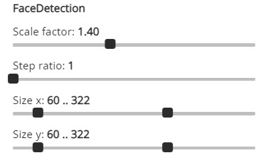
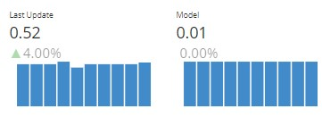
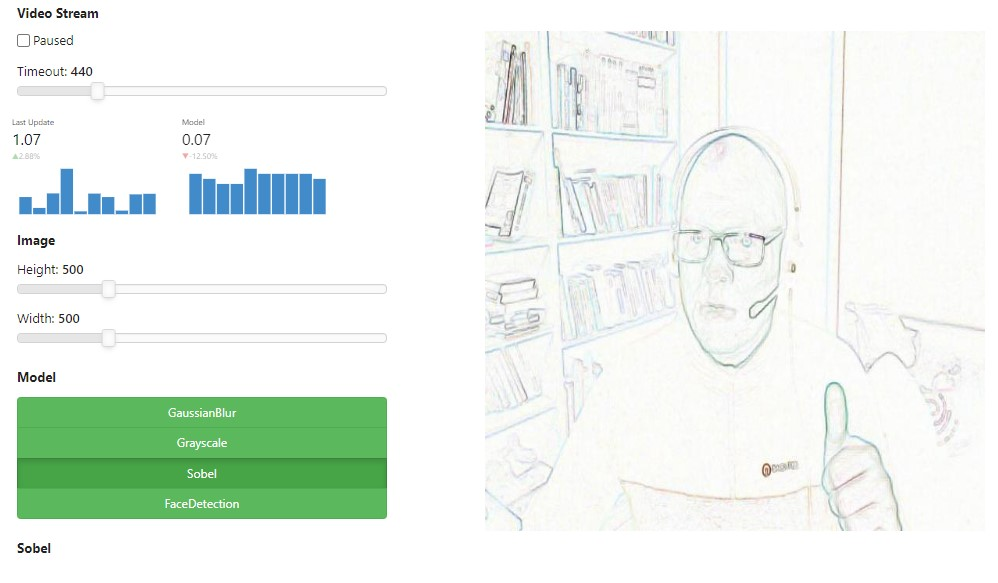
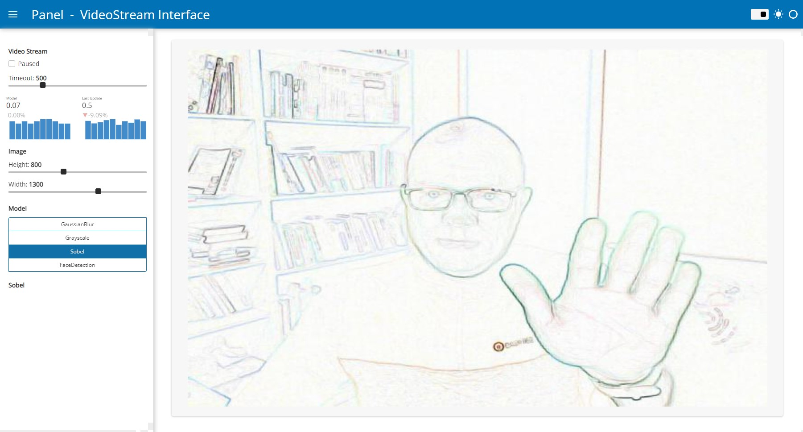

Streaming Videostream#
Streaming Video: Live video streams made easy#
In this example we will demonstrate how to develop a general tool to transform live image streams from the users web cam. We will be using Panels
VideoStream widget to record and stream the images.
We will also show how to apply blur, grayscale, sobel and face recognition models to the video stream.
Imports and Settings#
Among other things we will be using numpy, PIL and scikit-image to work with the images.
import base64
import io
import time
import numpy as np
import param
import PIL
import skimage
from PIL import Image, ImageFilter
from skimage import data, filters
from skimage.color.adapt_rgb import adapt_rgb, each_channel
from skimage.draw import rectangle
from skimage.exposure import rescale_intensity
from skimage.feature import Cascade
import panel as pn
pn.extension(design='material', sizing_mode="stretch_width")
We define the height and width of the images to transform. Smaller is faster. We also define the timeout, i.e. how often the videostream takes and streams a new image.
HEIGHT = 500 # pixels
WIDTH = 500 # pixels
TIMEOUT = 500 # milliseconds
Base Image Models#
We will need to define some base image models components. The base models are custom Panel components that inherit from Panels Viewer class.
The base models makes it easy to later turn image to image algorithms into interactive UIs like the FaceDetectionModel shown in the image just below.

Please note we restrict our selves to working with .jpg images. The VideoStream widget also support .png images. But .png images are much bigger and slower to work with.
class ImageModel(pn.viewable.Viewer):
"""Base class for image models."""
def __init__(self, **params):
super().__init__(**params)
with param.edit_constant(self):
self.name = self.__class__.name.replace("Model", "")
self.view = self.create_view()
def __panel__(self):
return self.view
def apply(self, image: str, height: int = HEIGHT, width: int = WIDTH) -> str:
"""Transforms a base64 encoded jpg image to a base64 encoded jpg BytesIO object"""
raise NotImplementedError()
def create_view(self):
"""Creates a view of the parameters of the transform to enable the user to configure them"""
return pn.Param(self, name=self.name)
def transform(self, image):
"""Transforms the image"""
raise NotImplementedError()
Lets define a base model for working with PIL images
class PILImageModel(ImageModel):
"""Base class for PIL image models"""
@staticmethod
def to_pil_img(value: str, height=HEIGHT, width=WIDTH):
"""Converts a base64 jpeg image string to a PIL.Image"""
encoded_data = value.split(",")[1]
base64_decoded = base64.b64decode(encoded_data)
image = Image.open(io.BytesIO(base64_decoded))
image.draft("RGB", (height, width))
return image
@staticmethod
def from_pil_img(image: Image):
"""Converts a PIL.Image to a base64 encoded JPG BytesIO object"""
buff = io.BytesIO()
image.save(buff, format="JPEG")
return buff
def apply(self, image: str, height: int = HEIGHT, width: int = WIDTH) -> io.BytesIO:
pil_img = self.to_pil_img(image, height=height, width=width)
transformed_image = self.transform(pil_img)
return self.from_pil_img(transformed_image)
def transform(self, image: PIL.Image) -> PIL.Image:
"""Transforms the PIL.Image image"""
raise NotImplementedError()
Lets define a base model for working with Numpy images.
class NumpyImageModel(ImageModel):
"""Base class for np.ndarray image models"""
@staticmethod
def to_np_ndarray(image: str, height=HEIGHT, width=WIDTH) -> np.ndarray:
"""Converts a base64 encoded jpeg string to a np.ndarray"""
pil_img = PILImageModel.to_pil_img(image, height=height, width=width)
return np.array(pil_img)
@staticmethod
def from_np_ndarray(image: np.ndarray) -> io.BytesIO:
"""Converts np.ndarray jpeg image to a jpeg BytesIO instance"""
if image.dtype == np.dtype("float64"):
image = (image * 255).astype(np.uint8)
pil_img = PIL.Image.fromarray(image)
return PILImageModel.from_pil_img(pil_img)
def apply(self, image: str, height: int = HEIGHT, width: int = WIDTH) -> io.BytesIO:
np_array = self.to_np_ndarray(image, height=height, width=width)
transformed_image = self.transform(np_array)
return self.from_np_ndarray(transformed_image)
def transform(self, image: np.ndarray) -> np.ndarray:
"""Transforms the np.array image"""
raise NotImplementedError()
Timer#
Lets define a timer component to visualize the stats of the live videostream and the image transformations

class Timer(pn.viewable.Viewer):
"""Helper Component used to show duration trends"""
_trends = param.Dict()
def __init__(self, **params):
super().__init__()
self.last_updates = {}
self._trends = {}
self._layout = pn.Row(**params)
def time_it(self, name, func, *args, **kwargs):
"""Measures the duration of the execution of the func function and reports it under the
name specified"""
start = time.time()
result = func(*args, **kwargs)
end = time.time()
duration = round(end - start, 2)
self._report(name=name, duration=duration)
return result
def inc_it(self, name):
"""Measures the duration since the last time `inc_it` was called and reports it under the
specified name"""
start = self.last_updates.get(name, time.time())
end = time.time()
duration = round(end - start, 2)
self._report(name=name, duration=duration)
self.last_updates[name] = end
def _report(self, name, duration):
if not name in self._trends:
self._trends[name] = pn.indicators.Trend(
name=name,
data={"x": [1], "y": [duration]},
height=100,
width=150,
sizing_mode="fixed",
)
self.param.trigger("_trends")
else:
trend = self._trends[name]
next_x = max(trend.data["x"]) + 1
trend.stream({"x": [next_x], "y": [duration]}, rollover=10)
@param.depends("_trends")
def _panel(self):
self._layout[:] = list(self._trends.values())
return self._layout
def __panel__(self):
return pn.panel(self._panel)
VideoStreamInterface#
The VideoStreamInterface will be putting things together in a nice UI.

Lets define a helper function first
def to_instance(value, **params):
"""Converts the value to an instance
Args:
value: A param.Parameterized class or instance
Returns:
An instance of the param.Parameterized class
"""
if isinstance(value, param.Parameterized):
value.param.update(**params)
return value
return value(**params)
The VideoStreamInterface will take a list of ImageModels. The user can the select and apply the models to the images from the VideoStream.
class VideoStreamInterface(pn.viewable.Viewer):
"""An easy to use interface for a VideoStream and a set of transforms"""
video_stream = param.ClassSelector(
class_=pn.widgets.VideoStream, constant=True, doc="The source VideoStream"
)
height = param.Integer(
default=HEIGHT,
bounds=(10, 2000),
step=10,
doc="""The height of the image converted and shown""",
)
width = param.Integer(
default=WIDTH,
bounds=(10, 2000),
step=10,
doc="""The width of the image converted and shown""",
)
model = param.Selector(doc="The currently selected model")
def __init__(
self,
models,
timeout=TIMEOUT,
paused=False,
**params,
):
super().__init__(
video_stream=pn.widgets.VideoStream(
name="Video Stream",
timeout=timeout,
paused=paused,
height=0,
width=0,
visible=False,
format="jpeg",
),
**params,
)
self.image = pn.pane.JPG(
height=self.height, width=self.width, sizing_mode="fixed"
)
self._updating = False
models = [to_instance(model) for model in models]
self.param.model.objects = models
self.model = models[0]
self.timer = Timer(sizing_mode="stretch_width")
self.settings = self._create_settings()
self._panel = self._create_panel()
def _create_settings(self):
return pn.Column(
pn.Param(
self.video_stream,
parameters=["timeout", "paused"],
widgets={
"timeout": {
"widget_type": pn.widgets.IntSlider,
"start": 10,
"end": 2000,
"step": 10,
}
},
),
self.timer,
pn.Param(self, parameters=["height", "width"], name="Image"),
pn.Param(
self,
parameters=["model"],
expand_button=False,
expand=False,
widgets={
"model": {
"widget_type": pn.widgets.RadioButtonGroup,
"orientation": "vertical",
"button_type": "primary",
"button_style": "outline"
}
},
name="Model",
),
self._get_transform,
)
def _create_panel(self):
return pn.Row(
self.video_stream,
pn.layout.HSpacer(),
self.image,
pn.layout.HSpacer(),
sizing_mode="stretch_width",
align="center",
)
@param.depends("height", "width", watch=True)
def _update_height_width(self):
self.image.height = self.height
self.image.width = self.width
@param.depends("model")
def _get_transform(self):
# Hack: returning self.transform stops working after browsing the transforms for a while
return self.model.view
def __panel__(self):
return self._panel
@param.depends("video_stream.value", watch=True)
def _handle_stream(self):
if self._updating:
return
self._updating = True
if self.model and self.video_stream.value:
value = self.video_stream.value
try:
image = self.timer.time_it(
name="Model",
func=self.model.apply,
image=value,
height=self.height,
width=self.width,
)
self.image.object = image
except PIL.UnidentifiedImageError:
print("unidentified image")
self.timer.inc_it("Last Update")
self._updating = False
Custom Image Models#
We will now make specific image to image algorithms interactive.
Let us start with the Gaussian Blur algorithm.
class GaussianBlurModel(PILImageModel):
"""Gaussian Blur Model
https://pillow.readthedocs.io/en/stable/reference/ImageFilter.html#PIL.ImageFilter.GaussianBlur
"""
radius = param.Integer(default=2, bounds=(0, 10))
def transform(self, image: Image):
return image.filter(ImageFilter.GaussianBlur(radius=self.radius))
Lets implement a Grayscale algorithm.
class GrayscaleModel(NumpyImageModel):
"""GrayScale Model
https://scikit-image.org/docs/0.15.x/auto_examples/color_exposure/plot_rgb_to_gray.html
"""
def transform(self, image: np.ndarray):
grayscale = skimage.color.rgb2gray(image[:, :, :3])
return skimage.color.gray2rgb(grayscale)
Lets implement the Sobel algorithm.
class SobelModel(NumpyImageModel):
"""Sobel Model
https://scikit-image.org/docs/0.15.x/auto_examples/color_exposure/plot_adapt_rgb.html
"""
def transform(self, image):
@adapt_rgb(each_channel)
def sobel_each(image):
return filters.sobel(image)
return rescale_intensity(1 - sobel_each(image))
Lets implement the face detection model of scikit-image.
@pn.cache()
def get_detector():
"""Returns the Cascade detector"""
trained_file = data.lbp_frontal_face_cascade_filename()
return Cascade(trained_file)
class FaceDetectionModel(NumpyImageModel):
"""Face detection using a cascade classifier.
https://scikit-image.org/docs/0.15.x/auto_examples/applications/plot_face_detection.html
"""
scale_factor = param.Number(default=1.4, bounds=(1.0, 2.0), step=0.1)
step_ratio = param.Integer(default=1, bounds=(1, 10))
size_x = param.Range(default=(60, 322), bounds=(10, 500))
size_y = param.Range(default=(60, 322), bounds=(10, 500))
def transform(self, image):
detector = get_detector()
detected = detector.detect_multi_scale(
img=image,
scale_factor=self.scale_factor,
step_ratio=self.step_ratio,
min_size=(self.size_x[0], self.size_y[0]),
max_size=(self.size_x[1], self.size_y[1]),
)
for patch in detected:
rrr, ccc = rectangle(
start=(patch["r"], patch["c"]),
extent=(patch["height"], patch["width"]),
shape=image.shape[:2],
)
image[rrr, ccc, 0] = 200
return image
Please note that these models are just examples. You can also implement your own models using Scikit-Image, Pytorch, Tensorflow etc and use the VideoStreamInterface to work interactively with them.
Its alive!#
Lets define an instance of the VideoStreamInterface
component = VideoStreamInterface(
models=[
GaussianBlurModel,
GrayscaleModel,
SobelModel,
FaceDetectionModel,
]
)
pn.Row(pn.Row(component.settings, max_width=400), component)
<ast>:30: ParamFutureWarning: Parameter 'video_stream' on <class 'panel.io.mime_render.VideoStreamInterface'> is being given a valid parameter reference VideoStream(design=<class 'panel.theme.materi..., format='jpeg', height=0, name='Video Stream', sizing_mode='fixed', timeout=500, visible=False, width=0) but is implicitly allow_refs=False. In future allow_refs will be enabled by default and the reference VideoStream(design=<class 'panel.theme.materi..., format='jpeg', height=0, name='Video Stream', sizing_mode='fixed', timeout=500, visible=False, width=0) will be resolved to its underlying value . Please explicitly set allow_ref on the Parameter definition to declare whether references should be resolved or not.
Wrap it in a template#
What makes Panel unique is that our components work very well in both the notebook and as standalone data apps.
We can wrap the component in the nicely styled FastListTemplate to make it ready for production.
pn.template.FastListTemplate(
site="Panel",
title="VideoStream Interface",
sidebar=[component.settings],
main=[component],
).servable(); # We add ; to not show the template in the notebook as it does not display well.
Serve it as a server side app#
It is now possible to serve the live app via the command panel serve streaming_videostream.ipynb. The app is the available at http://localhost:5006/streaming_videostream.

Serve it as a client side app#
You can also panel convert this app to web assembly for even better performance.
First you will need to create a requirements.txt file with the following content
panel
numpy
scikit-image
Then you can
Run
panel convert streaming_videostream.ipynb --to pyodide-worker --out pyodide --requirements requirements.txtRun
python3 -m http.serverto start a web server locallyOpen http://localhost:8000/pyodide/streaming_videostream.html to try out the app.